Monstrous Nightmare
le cauchemar embraséDescription
§ 1Peut s'enflammer entièrement en combat — un manteau de feu qui rend l'approche mortelle.
Souffle de feu de longue portée, dégâts soutenus. Ne peut pas activer son manteau de feu sous la pluie.
Avertissement : il brûle son cavalier au démontage — submerge-le dans l'eau avant de descendre, ou monte avec une potion de Résistance au feu active.
Capacités
§ 2Fire Breath (longue portée)
Souffle de feu continu (FireBreathProjectile) — faisceau bouche → cible jusqu'à 16 blocs, particules FLAME, sizeHint 1.5→0.0.
Fire Cloak — Manteau de Feu
S'embrase entièrement. Tant que le manteau est actif, l'approche en mêlée inflige des dégâts de contact. Désactivé sous la pluie. Vérifie l'absence de DAMAGE_RESISTANCE avant activation. (S41 : son MONSTROUS_NIGHTMARE_SPECIAL à l'activation.)
Apprivoisement
§ 3Tier IV — La potion sacrée.
Nourriture : Porc et mouton.
Conditions : Aucune armure ni arme · effet Résistance au feu actif.
- Brasse une potion de Résistance au feu et bois-la avant l'approche.
- Retire armure et arme.
- Tiens du porc ou du mouton et clic droit.
- Au seuil, l'apprivoisement réussit.
Reproduction
§ 4Habitat
§ 5
A. Badlands, Wooded Badlands, Eroded Badlands.
B. Windswept Hills, Windswept Gravelly Hills, Windswept Forests.
Variantes (14)
§ 6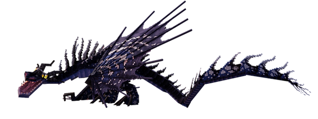
Variant 1
Mountain
Tons rocailleux
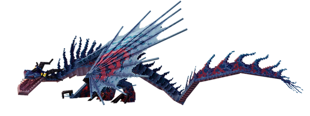
Variant 2
Bloodroot
Rouge sang
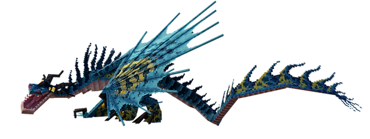
Variant 3
Fangmaster
Crocs blancs proéminents
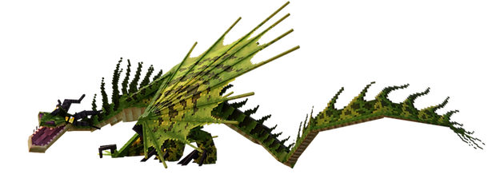
Variant 4
Burlystorm
Massif et tempétueux
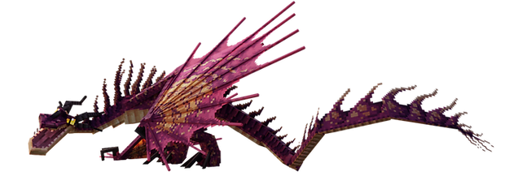
Variant 5
Wolfsbane
Tons herbe vénéneuse
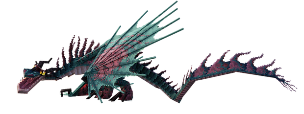
Variant 6
Exiled
Marbré sombre
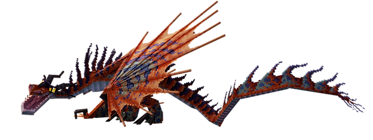
Variant 7
Hellebore
Vert poison
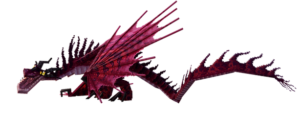
Variant 8
Carnation
Rose éclatant
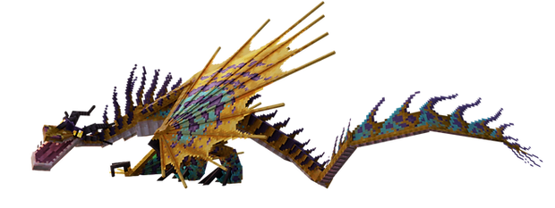
Variant 9
Cardinal
Rouge cardinal
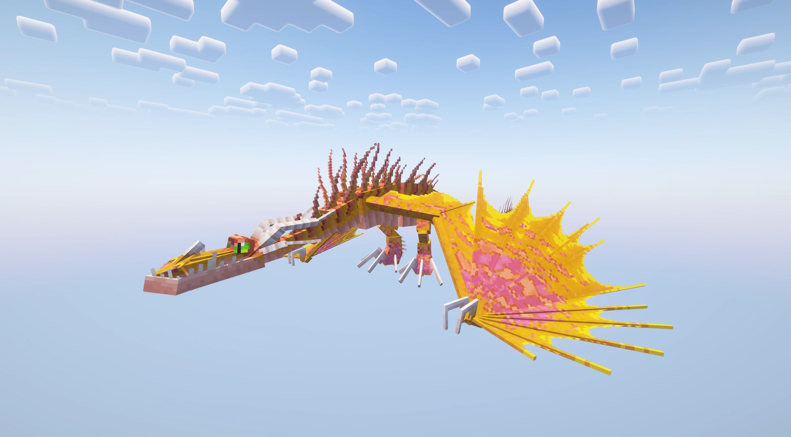
Variant 10
Sunfyre
Or solaire
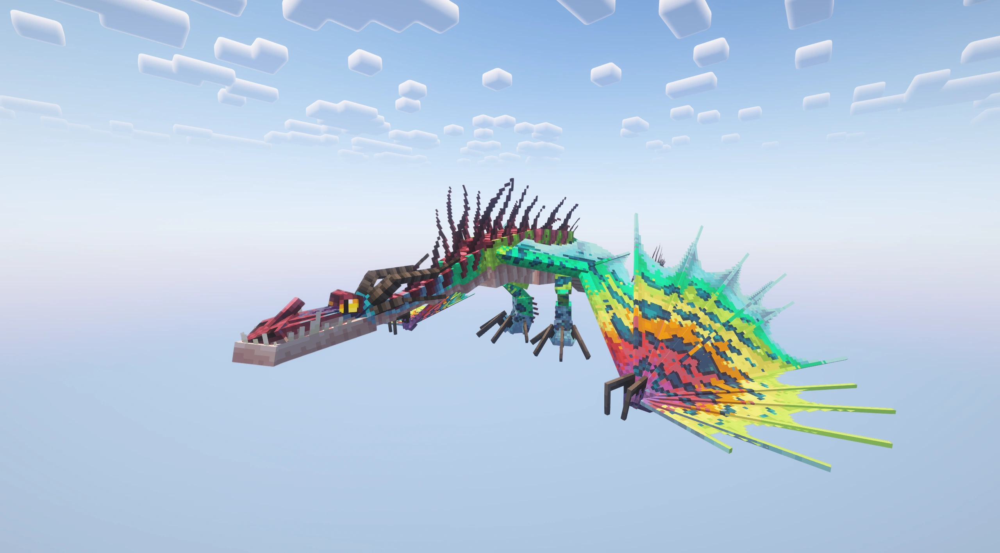
Variant 11
Rainbow
Multicolore festif
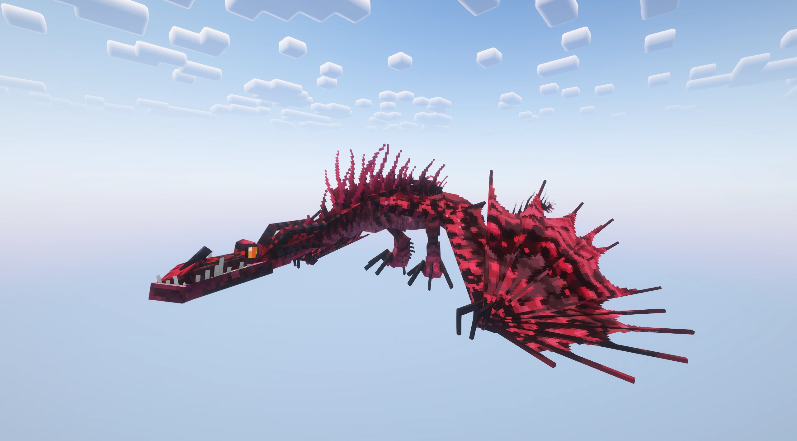
Variant 12
Tsukarion
Tons exotiques
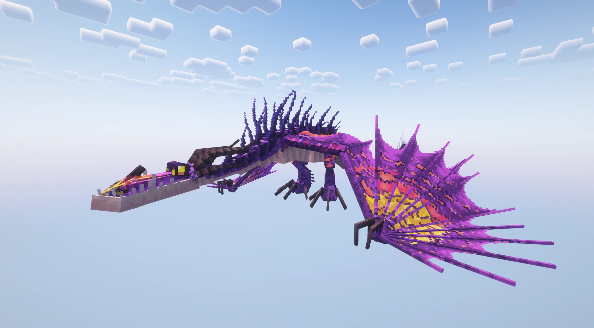
Variant 13
Fanghook
Variante mélanique 1/20
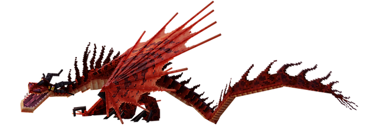
Variant 0
Hookfang
Référence à Snotlout — case 0, forme par défaut
Trivia
§ 7- 120 PV : la santé brute la plus haute du codex (derrière le Triple Stryke à 140).
- MOVEMENT_SPEED 0.04 — au sol c'est un escargot, mais en vol il accélère à 0.14.
- Manteau de feu désactivé sous la pluie (vérification météo runtime).
- Brûle son cavalier au démontage — submerger ou prendre une Résistance au feu avant de descendre.
- Position des passagers ajustée en S30 (extraRidersY 1.0 → 1.9, P2/P3 ne flottent plus).
Commande /summon
§ 8/summon isleofberk:monstrous_nightmare ~ ~ ~ {variant:1}
Variantes 1 à 13. Hookfang (variant 0) : case 0, forme par défaut.